Publicaciones de interés general
- Acércate a las personas con autismo
-
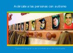
Exposición fotográfica de la Confederación Autismo España
- Autismo, calidad de vida hoy
-
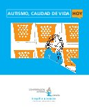
…En los últimos años se han publicado diversos estudios y trabajos de investigación sobre las necesidades percibidas por las propias personas con Trastornos del Espectro del Autismo (TEA), por sus familias y por los profesionales que actualmente trabajan proporcionándoles apoyos.
Además, son cada vez más numerosas las publicaciones nacionales e internacionales, que hacen énfasis en la necesidad de adaptar y planificar los apoyos, los programas y los servicios dirigidos a las personas con TEA en base a conceptos y modelos actuales, que destacan el papel de la propia persona, de sus intereses, motivaciones y puntos fuertes como el núcleo central desde el que planificar todas las actuaciones…
- Apoyo en el proceso de duelo de personas con discapacidad intelectual
-

…Uno de los momentos en que más dificultades encontramos para dar apoyo a las personas con discapacidad intelectual es el del duelo. Si estos momentos ya son difíciles, por lo general, en cualquier circunstancia, en el caso de las personas con discapacidad intelectual esta dificultad se acentúa. Las creencias y mitos erróneos sobre las repercusiones de la discapacidad intelectual en la elaboración de un proceso de duelo no han ayudado a estas personas ni a quienes les rodean en dicha elaboración.
El objetivo general de esta propuesta es ayudar a las personas con discapacidad intelectual en sus procesos de elaboración del duelo desde una perspectiva normalizadora. Hay que tener en cuenta que normalizar no es pretender convertir en normal a una persona con discapacidad, es reconocerle los mismos derechos y necesidades que tienen los ciudada nos de edad y contexto similar en su contexto…
- Convención sobre los derechos de las personas con discapacidad
-
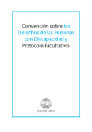
La Convención sobre los derechos de las personas con discapacidad y su Protocolo Facultativo fueron aprobados el 13 de diciembre de 2006 en la Sede de las Naciones Unidas en Nueva York, y quedaron abiertos a la firma el 30 de marzo de 2007. Se obtuvieron 82 firmas de la Convención y 44 del Protocolo Facultativo, así como una ratificación de la Convención. Nunca una convención de las Naciones Unidas había reunido un número tan elevado de signatarios en el día de su apertura a la firma. Se trata del primer instrumento amplio de derechos humanos del siglo XXI y la primera convención de derechos humanos que se abre a la firma de las organizaciones regionales de integración. Señala un “cambio paradigmático” de las actitudes y enfoques respecto de las personas con discapacidad.
La Convención se concibió como un instrumento de derechos humanos con una dimensión explícita de desarrollo social. En ella se adopta una amplia clasificación de las personas con discapacidad y se reafirma que todas las personas con todos los tipos de discapacidad deben poder gozar de todos los derechos humanos y libertades fundamentales. Se aclara y precisa cómo se aplican a las personas con discapacidad todas las categorías de derechos y se indican las esferas en las que es necesario introducir adaptaciones para que las personas con discapacidad puedan ejercer en forma efectiva sus derechos y las esferas en las que se han vulnerado esos derechos y en las que debe reforzarse la protección de los derechos.
- Descubrir el Asperger (http://www.pairal.net/asperger/llibre-es.php)
-
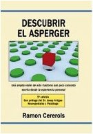
Ejemplo de la tenacidad en el estudio, se ha publicado el libro Descubrir el Asperger, de Ramon Cererols (http://www.pairal.net/). El libro aparece a los 11 meses de que su autor descubriese el Asperger, y en el se presenta de forma clara y precisa una muy actual revisión del estado actual de conocimientos sobre los TEA. Copiamos a continuación el texto de presentación escrito por el propio autor del libro:
En el libro Descubrir el Asperger encontraréis:
- Una descripción completa, rigurosa y estructurada de los conocimientos actuales sobre el Asperger, con más de 200 notas a pie de página que referencian artículos académicos y de investigación, y libros de expertos.
- Intercalada con la anterior, pero claramente diferenciada, la narración de la experiencia personal del autor, como ejemplo de una de las múltiples maneras de vivir el Asperger.
- Una reflexión final sobre la existencia, nacida de la conciencia Aspie, y desde la perspectiva de los conocimientos actuales físicos y neurocientíficos.
- Una bibliografía con breves descripciones de 70 fuentes de documentación seleccionadas entre unas 2.000 consultadas para la preparación del libro.
- El síndrome de Asperger. Publicación de la Asociación Asperger Asturias
-
…Cuando las familias de niños y niñas Asperger nos enfrentamos a la realidad de que nuestros hijos van a tener que aprender todo de forma diferente al resto de los niños, nuestra mayor preocupación es que sus profesores y todo su entorno educativo lo entienda y comprenda, para luego poder intervenir adecuadamente, y poder llegar de una manera efectiva y practica a la mente de unos niños especiales con muchas capacidades que desarrollar, si sabemos cómo ayudarles a superar sus dificultades.
Con este reto, las Asociaciones Asperger se han planteado desde siempre y han intentado, desde su experiencia y trabajo con niños y niñas Asperger, dar instrumentos a quienes pasan tantas horas con nuestros niños, para que puedan detectar los primeros síntomas que nos lleven a un diagnóstico precoz, y a una intervención eficaz cuando el niño está integrado en el aula. Con este objetivo la Asociación Asperger Asturias se propuso la tarea de elaborar un guía específica para todo el entorno educativo. Esta obra es el resultado de un enorme esfuerzo que por fin ha dado sus frutos.
Esta obra está dedicada a vosotros, los profesores, los orientadores, los educadores de nuestros niños y niñas Asperger, vosotros sois quienes vais a tener la maravillosa oportunidad de utilizarla y obtener lo que todos buscamos: que nuestros hijos e hijas tengan el entorno y los medios más adecuados para conseguir los resultados más beneficiosos para ellos en cada caso concreto. Que ningún niño o niña Asperger pase por un centro educativo sin que se detecten cuales son sus necesidades educativas especiales, y una vez detectadas, saber y poder darles los instrumentos óptimos para que puedan alcanzar los mejores resultados posibles en su etapa escolar…
- Estrategia Española de Trastornos del Espectro del Autismo
-
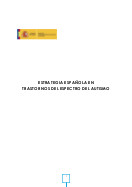
En los últimos cuarenta años la prevalencia de los trastornos del espectro del autismo (TEA) se ha incrementado significativamente, situándose en la actualidad en 1 caso por cada 100 nacimientos (Autismo Europa, 2012), lo que cifraría en más de 450.000 el número de personas con TEA en España. No obstante, el número de personas afectadas por este tipo de trastorno sería superior al millón si se considera el profundo impacto que produce en el sistema familiar en el que se desarrolla la persona, repercutiendo por lo tanto en cada uno de sus miembros.
Estas circunstancias, sumadas a la especificidad y heterogeneidad de las situaciones y necesidades que presentan las personas con TEA, han llevado a la aprobación, el pasado 18 de noviembre de 2014, con el respaldo unánime de todos los grupos parlamentarios, de una proposición no de ley en la que se insta al Gobierno a estudiar, en el ámbito de sus competencias, la elaboración y desarrollo de una Estrategia Nacional de Autismo.
El objetivo fundamental de esta iniciativa es contemplar protocolos de atención en diversos ámbitos: sanidad, cultura, educación, empleo, etc., para personas con trastornos del espectro del autismo (en adelante, TEA).
Así pues, esta Estrategia viene a dar respuesta al mandato unánime del Congreso de los Diputados, en lo que sin duda constituirá una actuación que contribuirá a promover la igualdad de oportunidades y el ejercicio efectivo de los derechos de cada persona con TEA en todo el territorio español.
- Guía de estilo sobre discapacidad para profesionales de los medios de comunicación
-
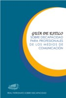
…Esta Guía de Estilo tiene la vocación de dar a conocer, actualizar y poner en positivo la terminología que afecta a las personas con discapacidad tras la rápida evolución que ha experimentado este colectivo en los últimos años, que ha pasado de la más absoluta ocultación y oscurantismo a una situación donde se busca, por encima de todo, su normalización. Este proceso ha sido muy rápido y los avances conseguidos en una serie de ámbitos no han ido acompañados de un cambio de lenguaje que ayude a eliminar los prejuicios y conceptos estereotipados referentes al mundo de la discapacidad. Y es que el lenguaje no es sólo una cuestión de forma, sino también de fondo. No se trata sólo de crear o actualizar unas leyes que favorezcan el cambio, porque éste no es posible si la sociedad en su conjunto, con sus administradores a la cabeza, no lo interioriza ni lo acepta. Se trata de suprimir, en la medida de lo posible, las barreras mentales que tanto daño han hecho y siguen haciendo a las personas con discapacidad, y que están íntimamente relacionadas con un lenguaje que es el que transluce esa mentalidad negativa…
- Informe mundial sobre la discapacidad
-
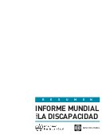
… Más de mil millones de personas viven en todo el mundo con alguna forma de discapacidad; de ellas, casi 200 millones experimentan dificultades considerables en su funcionamiento. En los años futuros, la discapacidad será un motivo de preocupación aún mayor, pues su prevalencia está aumentando. Ello se debe a que la población está envejeciendo y el riesgo de discapacidad es superior entre los adultos mayores, y también al aumento mundial de enfermedades crónicas tales como la diabetes, las enfermedades cardiovasculares, el cáncer y los trastornos de la salud mental.
En todo el mundo, las personas con discapacidad tienen peores resultados sanitarios, peores resultados académicos, una menor participación económica y unas tasas de pobreza más altas que las personas sin discapacidad. En parte, ello es consecuencia de los obstáculos que entorpecen el acceso de las personas con discapacidad a servicios que muchos de nosotros consideramos obvios, en particular la salud, la educación, el empleo, el transporte, o la información. Esas dificultades se exacerban en las comunidades menos favorecidas…
- La discapacidad en Argentina
-
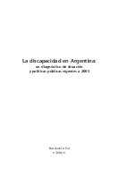
…Uno de los grupos históricamente marginados en las sociedades es el que constituyen las personas con discapacidad. El sistema en conjunto de las Naciones Unidas está comprometido en la eliminación de estos prejuicios, y prueba de ello son –por mencionar las más trascendentes– la declaración del Año Internacional de las Personas con Discapacidad (1981), la Década de las personas con discapacidad (1980-1990) y la declaración de las Normas Uniformes para la equiparación de oportunidades para las personas con discapacidad (1993).
Para arribar a la solución de un problema, cualquiera éste sea, es condición previa conocer a fondo su dimensión real. En el caso de las sociedades en transformación, como es la argentina, la información suele ser escasa o inexistente, y esta ignorancia es aún más notoria en el caso de aquellos problemas que no afectan en forma directa a la mayoría. En la Argentina, las personas con discapacidad no merecieron –hasta hace pocos años– ninguna atención especial por parte de los sucesivos gobiernos. Para profundizar en el asunto, es imprescindible forjar un perfil actualizado del grupo de las personas con discapacidad, que tampoco pierda de vista el objetivo final de asegurar el ejercicio de los derechos a todas las personas por igual…
- Los derechos de las personas con discapacidad
-

… Vivimos en un momento muy significativo, desde la perspectiva de la afirmación de los derechos de las personas con discapacidad. En las dos últimas décadas ha ido cambiando la mirada de la sociedad, tanto respecto de la diversidad como de la apreciación de la condición social de los llamados grupos vulnerables.
La invisibilidad fue el común denominador en el trato de cientos de miles de personas en el mundo entero y en nuestro propio país, al que puede caracterizarse con estas palabras: “Hoy los excluidos, los marginados, los pobres extremos, los débiles, las víctimas de diversas formas de violencia, los discriminados racial y socialmente y la mayoría de las personas con discapacidad, forman parte del subsuelo de la Patria. En rigor siempre lo fueron. Simplemente recién ahora, a principios del siglo XXI podemos percibir estos hechos como una injusticia incompatible con la dignidad humana…”
- Los derechos del niño con discapacidad en España
-
… Cuando hablamos de los derechos del niño con discapacidad, tratamos una cuestión de derechos humanos, cuestión que entrecruza los derechos humanos de la infancia y adolescencia, con los derechos humanos de las personas con discapacidad.
En los Capítulos siguientes, entiendo por niño todo ser humano menor de dieciocho años, tal y como lo define el artículo 1 de la Convención de Naciones Unidas sobre los Derechos del Niño, y por discapacidad, toda restricción o ausencia de la capacidad para realizar una actividad, en la forma o dentro del margen que se considera normal para un ser humano de su edad…
- Manual de apoyo para la detección de los trastornos del espectro autista
-

…El Grupo de Estudio de los trastornos del espectro autista del Instituto de Investigación de Enfermedades Raras, Instituto de Salud Carlos III, en su Informe sobre Demora Diagnóstica en los TEA (2004) expone, entre otros, los siguientes y alarmantes datos:
- Las familias son las primeras en detectar signos de alarma en el desarrollo de su hijo/a.
- Desde que las familias tienen las primeras sospechas de que su hijo presenta un trastorno en el desarrollo hasta que obtienen un diagnóstico final pasan 2 años y 2 meses.
- La edad media en la que un niño recibe un diagnóstico de TEA es casi a los 5 años.
- El diagnóstico de los TEA es fruto, hasta el momento, más de los Servicios especializados en diagnóstico de TEA (a los que acuden la familia de forma privada) que de los Servicios Sanitarios de Atención primaria.
- Aunque las familias acuden a consultar a servicios públicos, la mayoría de los diagnósticos más específicos se realizan en servicios privados (incluyéndose en esta categoría las propias asociaciones de familias de personas con autismo).
- …
- Modelo de calidad de vida aplicado a la atención residencial de personas con necesidades complejas de apoyo
-

…La atención a personas con discapacidad ha evolucionado muy positivamente en las últimas décadas. Los profesionales del sector, así como los padres y las propias personas con discapacidad, consiguieron con su tesón y trabajo cotidiano visibilizar una problemática socialmente oculta y apostar por modelos de acompañamiento centrados en favorecer la igualdad. Es preciso reconocer el trabajo realizado que nos permite en la actualidad desarrollar un modelo de acompañamiento centrado en la calidad de vida. Sin este trabajo de base hoy no podríamos plantearnos hablar de modelos de calidad centrados en la persona. Un reto muy compartido. Así lo atestiguan el esfuerzo de organizaciones por definir procesos de buenas prácticas, modelos de apoyo positivo, y tantos proyectos encaminados a la autodeterminación de las personas…
- Propuesta de Plan Estratégico para personas con Trastornos del Espectro Autista y sus Familias
-
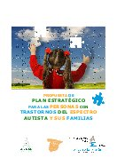
… Mediante el presente documento, el Consorcio de Autismo (integrado por la Federación Española de Padres de personas con autismo, FESPAU, y la Confederación Autismo España, CAE) junto con la Federación Asperger España (FAE), en calidad de entidades que representan a las personas con Trastornos del Espectro Autista (en adelante, TEA) y a sus familias, proponen a la Administración General del Estado las líneas prioritarias de actuación para lograr el cumplimiento de los objetivos del III Plan de Acción para las Personas con Discapacidad 2009-2012 aprobado por el Gobierno en julio de 2009, teniendo en cuenta las necesidades de este colectivo.
Al abordar la implementación de todas las medidas que se proponen ahora, es preciso tener en cuenta el texto de la Convención de la ONU sobre derechos de las personas con discapacidad aprobada el 13 de diciembre de 2006. Dicha Convención y su Protocolo Facultativo fueron aprobados por España el 3 de diciembre de 2007 y, una vez alcanzado el número necesario de ratificaciones, entraron en vigor el 3 de mayo de 2008.
Es necesario tener en cuenta, por tanto, sus principios generales y el contenido concreto de los derechos que se reconocen a las personas con discapacidad debido a que, con su entrada en vigor ha pasado a formar parte del ordenamiento jurídico interno español. Además, en caso de conflicto con normativa interna prevalece la Convención, y también debe ser un instrumento de interpretación de la normativa interna en España.
A efectos de abordar de forma completa y comprensiva, aunque brevemente, una propuesta de las áreas de actuación que deberían ser objeto de tratamiento de medidas concretas y específicas, a continuación se analizan la situación actual de las personas con TEA y se explican las razones por las que se hace necesario la adopción de un Plan Estratégico para, finalmente, especificar las medidas mínimas que se sugieren…
- Recomendaciones profesionales a los medios en el tratamiento del autismo
-
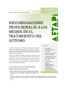
…En AETAPI (http://www.aetapi.org/) nos hacemos eco de la demanda de profesionales y familias dirigida a elaborar unas orientaciones para promover una visión positiva del autismo, a través de la correcta utilización de la terminología y las imágenes relacionadas con las personas con Trastornos del Espectro del Autismo (en adelante personas con TEA) por los medios de comunicación.
En esta línea, el actual Plan Estratégico nos guía hacia la elaboración de estas recomendaciones que tienen como objetivo sensibilizar a los medios sobre la necesidad de ofrecer una información objetiva y positiva, carente de sensacionalismo y que facilite a los profesionales y a las familias un conocimiento que oriente hacia recursos de apoyo y programas de intervención basados en buenas prácticas validadas científicamente…
- Senda hacia la participación. Calidad de vida en las personas con trastornos del espectro autista
-
…Plantearse cómo mejorar la calidad de vida de las personas con TEA supone, ante todo, un profundo y significativo cambio en nuestros roles y actitudes, puesto que implica que las personas a las que se dirigen nuestras actuaciones pasan a ser el centro a partir del cual se diseña cualquier tipo de intervención.
Si abordamos desde el campo de la discapacidad el concepto de calidad de vida, los cambios se basan principalmente en creer y apostar por las posibilidades de desarrollo y las capacidades de la persona.
En el prólogo del libro Como mejorar la calidad de vida de las personas con discapacidad, Robert Schalock afirma que, dentro del marco de referencia para futuras investigaciones, se encuentra la de contribuir a basar la provisión de servicios y apoyos en los predictores clave de una vida de calidad. Debemos pensar qué es lo que medimos e ir más allá de las medidas subjetivas (satisfacción, percepción personal…), para abordar medidas objetivas referidas a experiencias personales y también a circunstancias.
En definitiva, la evolución de las concepciones, prácticas y actitudes sobre la discapacidad y la importancia que ha adquirido el concepto de calidad de vida, hacen que éste sea, hoy, el paradigma de la comprensión para el desarrollo de acciones y buenas prácticas…
- Síndrome de Asperger: aspectos discapacitantes y valoración
-
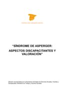
…el síndrome de Asperger es un trastorno severamente incapacitarte, crónico, que perdura toda la vida, equiparable en evolución y pronostico al Autismo y que por su asociación con otros trastornos psiquiátricos, problemas de aprendizaje requerirá una valoración individualizada de cada caso para considerar el grado de afectación funcional individual, familiar y social de tal manera que las ayudas se ajusten a cada caso…
- Síndrome de Asperger: un enfoque multidisciplinar. Actas de la 1ª jornada científico-sanitaria sobre síndrome de Asperger
-
…La consideración de que en el estado actual de la bibliogra fía en español se echaba en falta precisamente una mirada inter disciplinaria al mismo, la buena voluntad, la generosidad y el saber hacer de los ponentes de aquel día y el ánimo de los miembros de la Asociación Sevillana de síndrome de Asperger han hecho el resto. Este pequeño libro, al que no hay que juzgar por su tamaño sino por su contenido, como tendrá ocasión de apreciar quien se introduzca en sus densas páginas, aporta nueva luz para la detección y la terapia del síndrome de Asperger desde las perspectivas de la neuropsiquiatría, la psicología, la psiquiatría o la pedagogía, una nueva luz que brindamos entre todos a los profesionales que desde estos diversos campos puedan interesarse en el síndrome de Asperger…
- Un acercamiento al síndrome de Asperger: una guía teórica y práctica
-
…El objetivo de este dossier es ofrecer una visión tanto teórico-informativa como práctica del síndrome de Asperger. Comienza con una descripción histórica del cuadro, para luego dar paso a la definición de las características diagnósticas aceptadas por la comunidad científica internacional y a la descripción de las principales teorías neuropsicológicas a partir de las cuales se intenta explicar este síndrome, así como de sus aspectos neurobiológicos. Posteriormente se abordan las principales dificultades que suelen aparecer en tres etapas críticas del ciclo vital de estas personas: infancia, adolescencia y edad adulta. El carácter eminentemente práctico que hemos querido otorgar a este documento nos ha llevado a incluir orientaciones y estrategias educativas específicas para cada una de las etapas anteriormente citadas…
- Yo como tú
-
…FEAPS MADRID, Federación de Organizaciones en favor de personas con discapacidad intelectual, gracias al patrocinio de la Obra Social de CAJA MADRID, y la colaboración del diario El Mundo, quiere celebrar con todos los madrileños el Día Europeo e Internacional de las personas con discapacidad.
Por ese motivo, te proponemos la lectura de este libro cuyo protagonista es Diego, un joven con discapacidad intelectual que se dirige ti para establecer una relación entre iguales.
Recorrer las páginas de este libro, deslizarte por sus frases y dibujos, escuchar lo que Diego tiene que decir, será una experiencia que te ayudará a conocer y a relacionarte con las personas con discapacidad intelectual…
Publicaciones presentadas en esta página
- Acércate a las personas con autismo
- Autismo, calidad de vida hoy
- Apoyo en el proceso de duelo de personas con discapacidad intelectual
- Convención sobre los derechos de las personas con discapacidad
- Descubrir el Asperger
- El síndrome de Asperger. Publicación de la Asociación Asperger Asturias
- Estrategia Española de Trastornos del Espectro del Autismo
- Guía de estilo sobre discapacidad para profesionales de los medios de comunicación
- Informe mundial sobre la discapacidad
- La discapacidad en Argentina
- Los derechos de las personas con discapacidad
- Los derechos del niño con discapacidad en España
- Manual de apoyo para la detección de los trastornos del espectro autista
- Modelo de calidad de vida aplicado a la atención residencial de personas con necesidades complejas de apoyo
- Propuesta de Plan Estratégico para personas con Trastornos del Espectro Autista y sus Familias
- Recomendaciones profesionales a los medios en el tratamiento del autismo
- Senda hacia la participación. Calidad de vida en las personas con trastornos del espectro autista
- Síndrome de Asperger: aspectos discapacitantes y valoración
- Síndrome de Asperger: un enfoque multidisciplinar. Actas de la 1ª jornada científico-sanitaria sobre síndrome de Asperger
- Un acercamiento al síndrome de Asperger: una guía teórica y práctica
- Yo como tú
La edición y mantenimiento de EspectroAutista.Info se ha descontinuado. Para conocer todos los detalles lea la última noticia.
- Apoyo a familiares
- Publicaciones para educadores
- Orientación para adultos
- Publicaciones de interés general
- Publicaciones para profesionales de la salud